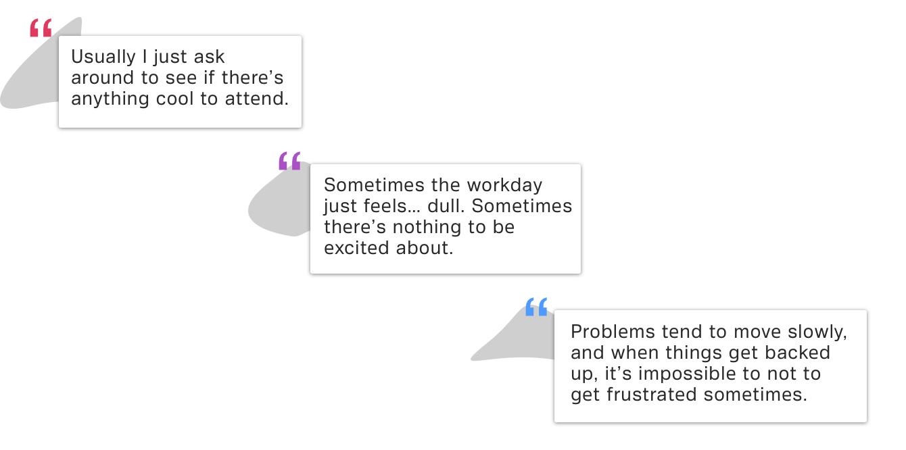
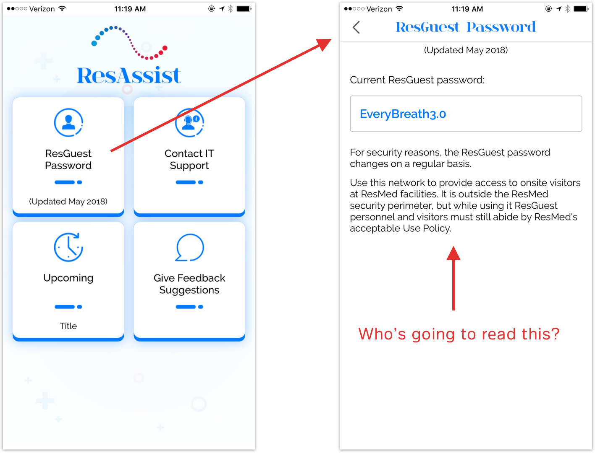
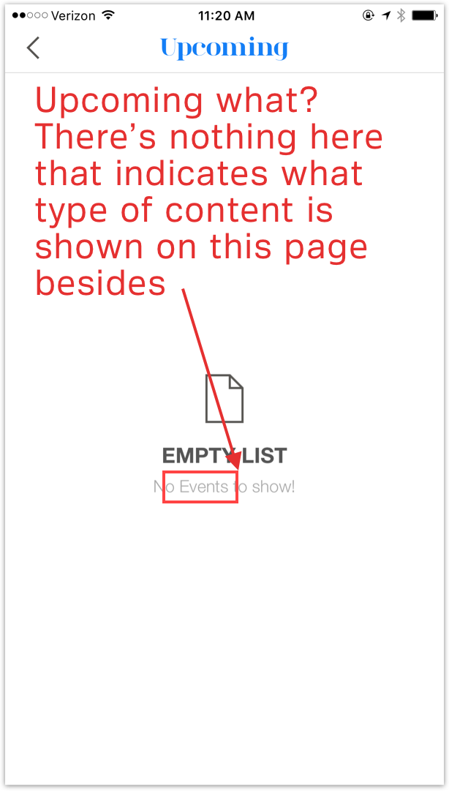
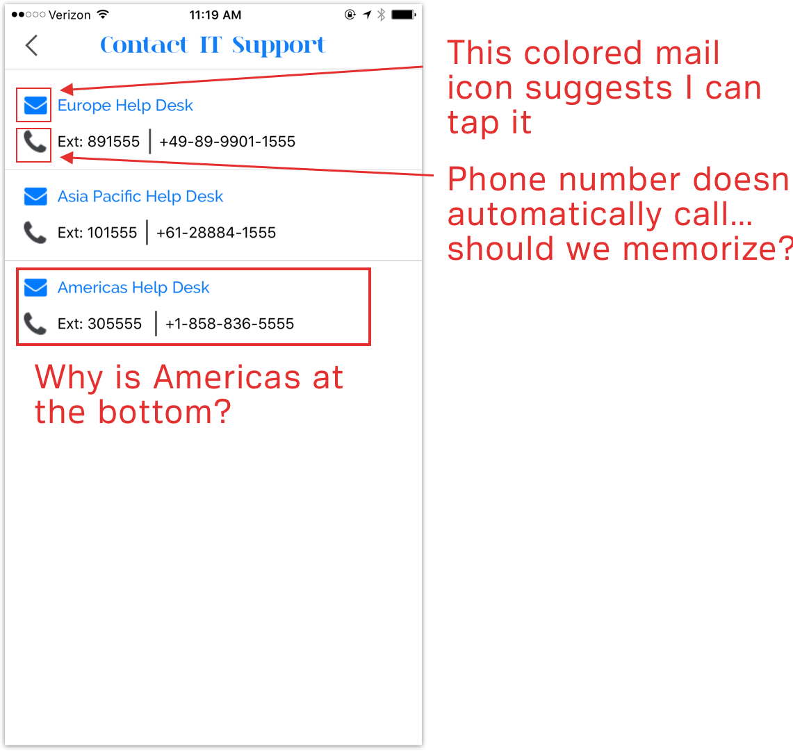
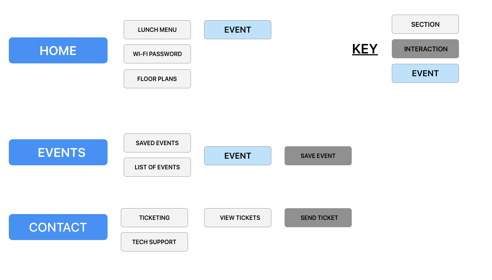

ResMed
UX DESIGN INTERNSHIP | SUMMER 2018
Introduction
ResMed is a medical equipment based company whose speciality lies in developing technology to treat sleep apnea. This includes but is not limited to portable oxygen concentrators (POCs), continuous positive airway pressure (CPAP) machines, and masks.
I was brought on to work on the various software that would allow patients to visualize their sleep data as well as other internal software.
What I worked on
I was tasked with working on a variety of projects, allowing me to hone many different areas of UX research and design. These tasks included
- Moderated/unmoderated user testing
- Guerilla user testing
- Creating testing protocol
- Creating wireframes and prototypes
Example of organizing findings from multiple user testing sessions
My first week, I was greeted with a lot of confusing ResMed software that all sounded alike to me.
- myAir
- myMobi
- AirMini
- AirView
- AirSense
- Airbnb
Just kidding about the last one.
But there was one project that allowed me to really test my design skills: the revamp of an internal app, ResAssist. ResAssist is an app used by ResMed employees for basic daily actions. There was already an existing iteration of the ResAssist app, but it needed an overhaul.
ResAssist
INTERNAL APP OVERHAUL
Role: UX Researcher, UX Designer
Team Size: Two, with 1 other Visual Designer (Rafael)
Tools: Sketch, Axure
Duration: 4 weeks
How can we facilitate the life of a ResMed employee?
There was no clear direction as to what a ResMed employee would do with ResAssist. Therefore my team, the Global Health Informatics UX Team, reached out to the IT department for additional debriefing.

The ResAssist app
What you see above is the entire ResAssist app, making it clear why no one used it. However, it's poisonous to assume why users engage or don't engage with a product, so I set out to learn more about employees' perception of ResAssist.
Research
Before even pulling up the ResAssist app, I wanted to get an understanding of how ResMed employees approached their workdays and how much they enjoyed life at ResMed.
A prominent finding was that ResMed employees like getting work done, as it's their favorite part of the day. When they sit in meetings and at their desks all day, it’s unfulfilling and frustrating to not make any progress. With the variety of software available to employees, a bad user experience paired with unproductive meetings can easily snowball into a poor day.
Usability Testing
To try to understand what was wrong with the app, I performed usability testing on 10 employees. Every app begins with a purpose, or else it becomes irrelevant. Therefore, given that the purpose of ResAssist is to "facilitate the life of a daily ResMed employee," how well did employees think it fulfilled its purpose?
Primary findings include:
Users felt like the Wi-Fi password was difficult to access. Users found it annoying to have to click a button to access the Wi-Fi password. There is also no copy/paste function in the app, therefore users must memorize the password and input it themselves.
Users didn’t know what the “Upcoming” page was for. Once users tapped on the “Upcoming” button, there was no information as to what the contents of the page were supposed to be.
The user can’t press what they want to press. Buttons that look tappable should be tappable.
The Problem
To sum it all up, users saw absolutely no value in ResAssist. They have no reason to open the app for whatever reason. If users saw no value in ResAssist, how could we hope to create value?
Ideation
I was able to boil ResAssist down to three key user needs:
1. I want to feel like I’m part of the ResMed community.
2. I want to be able to solve my work-related problems.
3. I want to look forward to something during the day.
From these needs, I knew what kind of experience ResAssist needed to provide. ResAssist should have a way for employees to keep up with events, afford quicker ticketing, and an integrated lunch menu (you read that correctly). All of these needed to be fulfilled within a single hub. With so many features, the primary challenge was how one app could fulfill so many purposes without us doing too much.
Architecture
Rafael (who is the Visual Designer) and I talked about how we could possibly lay the app out. We initially considered mapping out user flows, but came to the conclusion that ResMed would need to invest too many resources to accommodate. Therefore, the structure of ResAssist should be simple, with at most 1-2 steps.
Following this barebones creation of ResAssist, we needed to pitch this idea to ResMed employees who would take part in crafting the app. With the help of user research, the pitch was well received. I was ecstatic to take charge of a project that would help facilitate an employee’s everyday life.
Wireframing
Users had no interest in the old ResAssist because it was a poor pairing of information architecture and visual design. The new ResAssist aims to fix the usability problems and provide a fresh look to ResMed employees. I created wireframes for the first iteration of a redesigned ResAssist.
The wireframes included
- An events page to allow ResMed employees to keep up with internal events
- A support page to allow easy access to technical support
- An integrated ticket system to avoid an unpleasant web experience
Another round of guerrilla testing ensued. 10 users were tested -- 5 previous users who served as a control group, and 5 completely new users. Analyzing a change in reception was important to me because it allowed me to develop even more rapport. However, I understood how biased testing the same users would be, thus I looked to test on 5 new users. Biggest findings included:
- Signing in has no real purpose. There is a point to signing into the ticketing system. However, does signing in to the ResAssist mean that the pages are customizable? Could the ResAssist UI be unique to each person? Is there enough content to implement customization?
- The homepage doesn’t look like a homepage. Upon logging into ResAssist, the user is taken to the “Support” page that consists of the Wi-Fi password and contact numbers. This is an odd way to welcome employees to an app. Despite having the least amount of content, users spent a great deal of time looking at the “Support” page.
- Ticketing integration: yes! Live chat was praised. A live chat humanizes the ticketing experience. Assigning faces to names makes the user feel like their ticket wasn’t just thrown in with all other tickets. Including more details about the ticket itself (open, closed, etc.) prevents users from feeling like information is being hidden from them.
Refinement
As my term came to an end, our primary focus was visually updating ResAssist as well as continuing to conduct more user testing. We re-considered the feasibility of an integrated ticketing system, opting to create a dashboard – a homepage that contains information relevant to the ResMed employee. This dashboard consists of a lunch menu, a list of recommended/saved events, and floor plans. This dashboard update was paired with updates to color and iconography.


Different iterations of a visual redesign
Rafael did an amazing job creating different versions of ResAssist. We wanted employees to be able to recognize ResMed's primary colors of red, blue, and purple, while also giving the app a little bit of a spin.
ResAssist has been placed on the product roadmap for Q3 2021, with my research serving as a foundation for the project.
What did I get out of this project?
Working with Axure. I’m very adamant about wireframing with Sketch because it looked the best out of other software I’ve used (wireframes need to look somewhat pretty too!) But I’ve never had more fun creating wireframes. Axure was easy and intuitive, yet powerful when it came to creating wireframes and user flows.
Really evaluating user flows and information architecture. I was able to articulate my evaluations much clearer. I improved my ability to critique rather than criticize.
Working with a variety of people. As I’ve mentioned before, all of my previous projects have involved college students between the ages of 18-21. I like to think I can guess what their responses will be. In this environment, I had absolutely no clue what anyone was thinking, which is the beauty of user testing. I loved not knowing.
Conclusion
I want to thank my team and my HI intern squad for all the great memories. I'm forever grateful for this opportunity. Oh, and thanks to them, I evolved from a genuinely awful ping pong player into an almost adequate one.